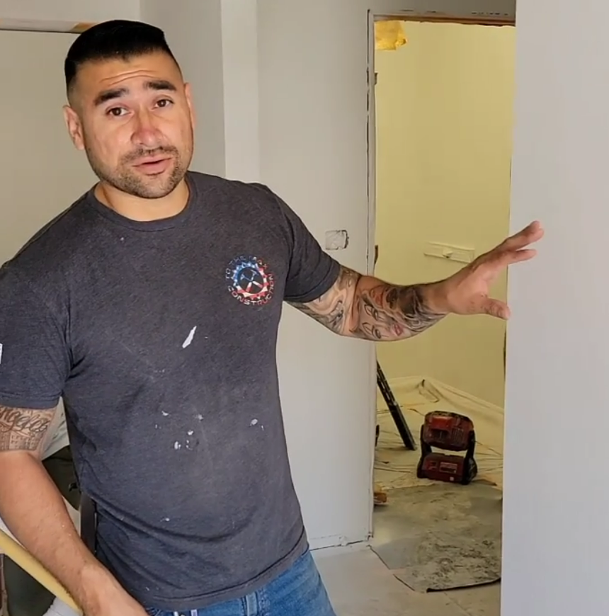

About To The Max Construction
Built on Pride, Precision & Integrity
Our Approach to Construction
At To The Max Construction, we take a craftsman's approach to modern building. Every structure we touch reflects an uncompromising standard—precision, safety, and lasting strength from the ground up. We routinely exceed code requirements because we build for longevity, not minimums.
Our clients work directly with me—no salespeople, no layers of management—from the first meeting to the final walkthrough. This direct relationship ensures clear communication, complete accountability, and results that reflect true craftsmanship at every stage.
Specialized Services
We're a full-service general contractor specializing in complex structural work and custom remodeling projects that demand expert-level precision:
- Structural and foundation repairs — including termite- and dry-rot-damaged framing, wood and beam replacements requiring engineered shoring systems, and foundation settlement corrections
- Custom home remodeling — transforming spaces with open-concept renovations that enhance both function and flow
- Hillside retaining wall systems — engineered solutions for complex terrain challenges
Clients hire us because they value lasting quality over quick fixes. Pride in every inch—that's how we Max Out Your Home.
Our Story
Established in 2014, To The Max Construction began with a foundation built on traditional craftsmanship and modern precision. My father sent me to trade school while I was still in high school, instilling the principle that skill and integrity must be learned early.
We started with high-end residential remodeling, including work featured on HGTV's House Hunters Renovation. Years in the field revealed deeper structural challenges—rotted beams, termite damage, and foundation movement—that required engineered solutions and precision carpentry. Those experiences evolved our company into a structural-solutions specialist trusted across Southern California.
Today, our focus remains simple: deliver strength, stability, and design detail that stand the test of time.
Meet Max Garcia

I'm personally on-site for every project, ensuring each phase meets my standards before the next begins. You'll work directly with me from start to finish—no handoffs, no middlemen—just clear communication and personal accountability.
Decades of hands-on experience, combined with guidance from retired engineers, inspectors, and master craftsmen, have shaped how I solve complex problems and lead my team. I still see myself as a student of the trade—always learning, always improving.
Clients often notice the difference: stronger structures, cleaner finishes, and open-concept layouts that transform how a home functions. That's intentional. When you work with To The Max Construction, you get leadership built on precision, integrity, and pride in every inch.